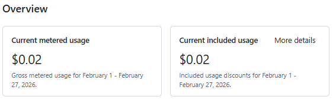
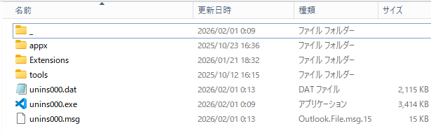

ホームに戻る(Back to Home)
めっちゃ久しぶりの更新
作成日時:2026年2月9日
内容:
サイト更新12月21日ぶりらしい( ﾟДﾟ)
そういえば、ふと1月半ばにGithubのBillingを見て見たら、
Current metered usage:$0.02

となっていて、もしやGithub Pagesか？と思いプライベートにしておいたんですよね(Privateでも意味はないらしい)。
まぁ、更新をする気もなかったのでそのまま放置してたんですよねぇ
で、久しぶりに更新しようと思ったらまたVSCodeに_フォルダ出来てたんですよね

そしていろいろ重なり更新が1ッ月後になりました
ここまで閲覧ありがとうございました^^